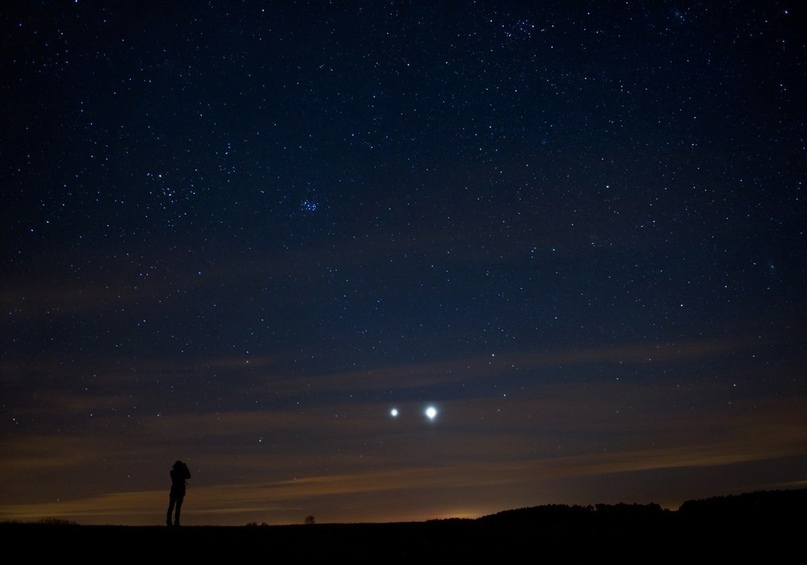
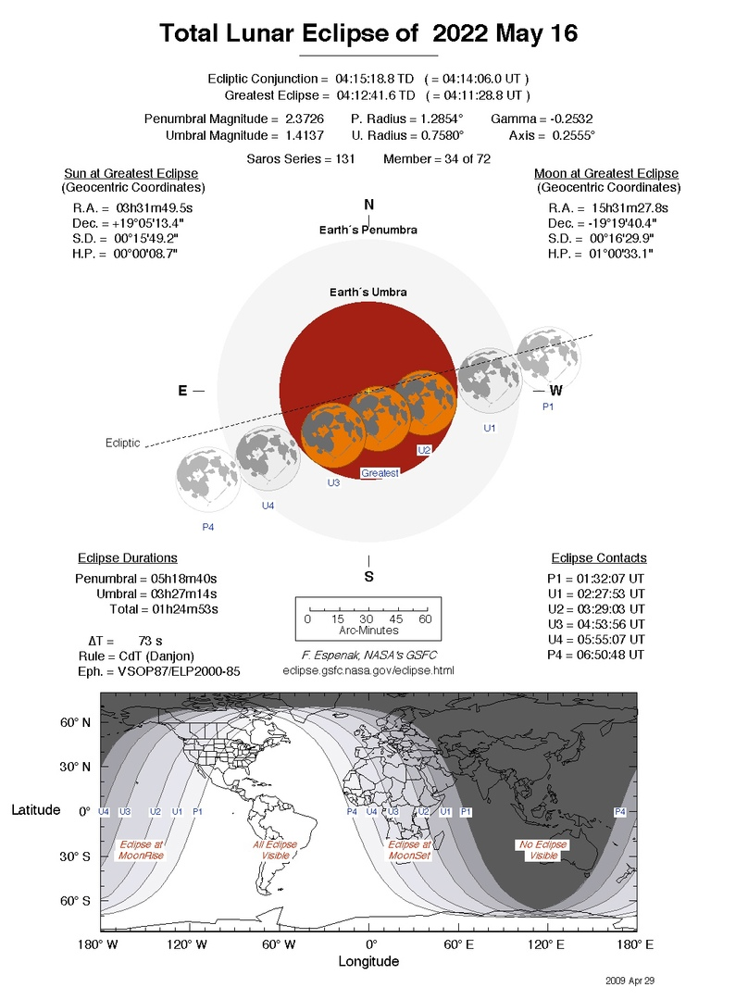
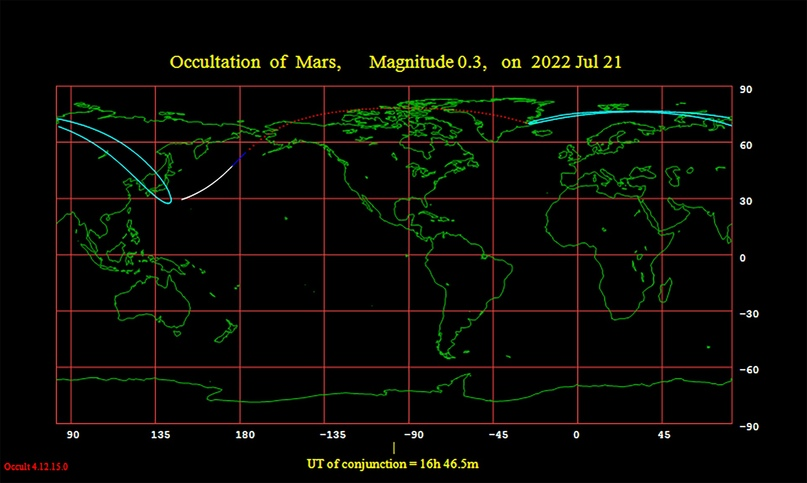
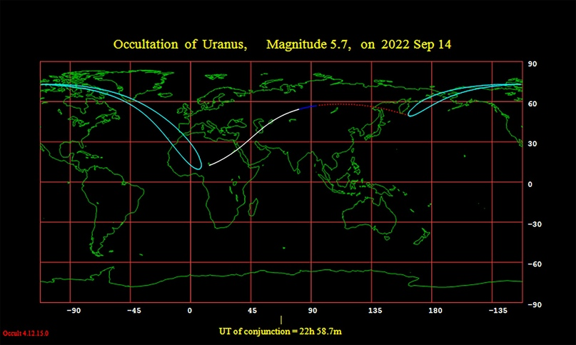
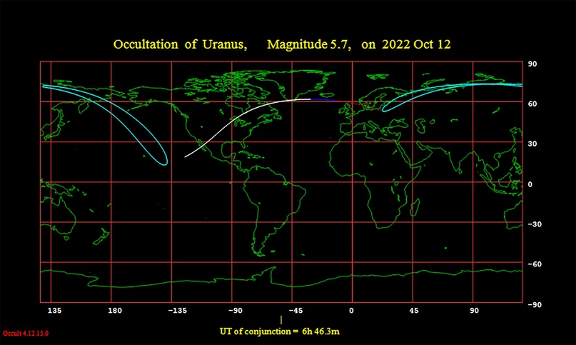
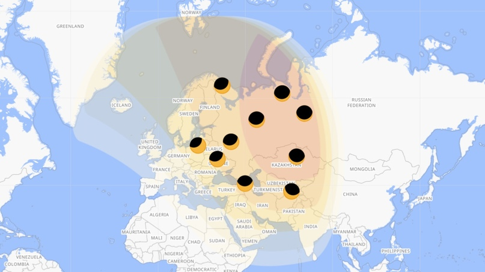
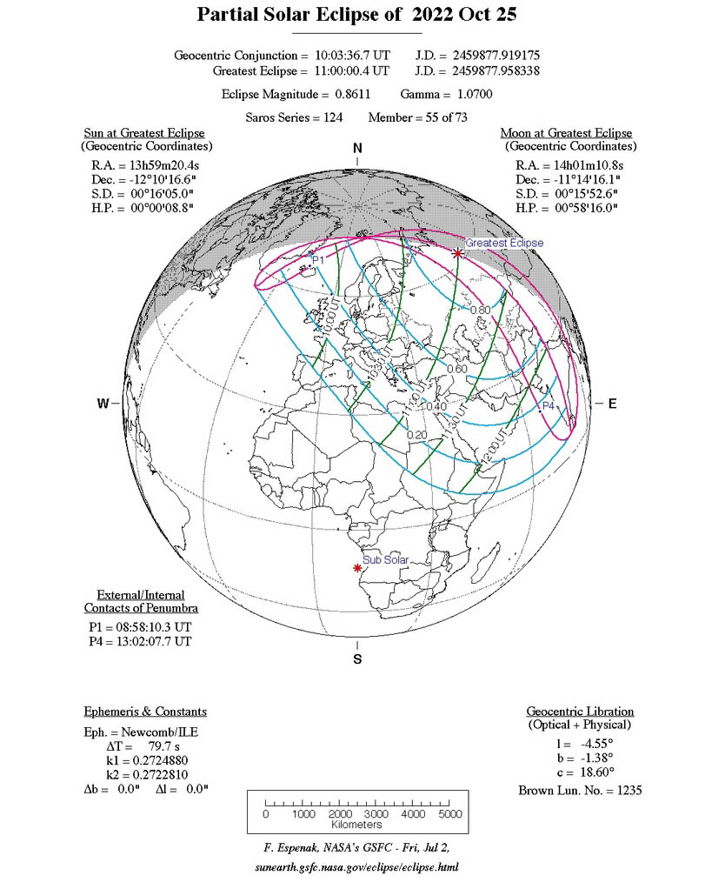

ЧТО ГОД ГРЯДУЩИЙ НАМ ГОТОВИТ?
Январь
3 января — максимум активности метеорного потока Квадрантиды. Ожидаемое зенитное часовое число метеоров равняется 120 (может варьироваться в диапазоне примерно 60-200). Молодая Луна не помешает наблюдениям.
18/19 января — в 2 млн км от Земли пролетит потенциально опасный околоземный астероид 1994 PC1. Его диаметр оценивается в 1 км (±0,3 км). Максимального блеска +10,2 зв. вел. от достигнет 18 января. В России и странах ближнего зарубежья он будет доступен для наблюдений.
Февраль
Увы, ничего интересного не ждем...
Март
29 марта — Венера (-4,4 зв. вел.) и Сатурн (+0,8 зв. вел.) в соединении. Расстояние между небесными светилами составит около 2°.
Апрель
5 апреля — Марс (+1,0 зв. вел.) и Сатурн (+0,9 зв. вел.) в соединении. Расстояние между небесными светилами составит около 0,3°.
22 апреля — максимум активности метеорного потока Лириды. Ожидаемое зенитное часовое число метеоров — около 20. Убывающая Луна в фазе, близкой к последней четверти, незначительно помешает наблюдениям.
30 апреля — частное солнечное затмение, будет доступно для наблюдений в Южной Америке на юге Чили и Аргентины.
Май
1 мая — Венера (-4,1 зв. вел.) и Юпитер (-2,1 зв. вел.) в соединении. Расстояние между небесными светилами составит около в 0,3°.
Соединение Юпитера и Венеры 11.03.2012, Marek Nikodem
6 мая — максимум активности метеорного потока эта-Аквариды. Ожидаемое зенитное часовое число метеоров равняется 50 (периодически варьируется в диапазоне ~40-85). Молодая Луна не помешает наблюдениям.
16 мая — полное лунное затмение. Затмение будет видно в Африке, Северной и Южной Америке, Западной Европе. В России ни полная фаза затмения, ни частные фазы затмения не видны.
29 мая — Марс (+0,7 зв. вел.) и Юпитер (-2,2 зв. вел.) в соединении. Расстояние между небесными светилами составит около 0,6°.
Июнь
Увы, ничего интересного не ждем...
Июль
21 июля — покрытие Марса (+0,3 зв. вел.) Луной (Ф=0,40).
30 июля — максимум активности метеорного потока Южные дельта-Аквариды. Ожидаемое зенитное часовое число метеоров равняется 25. Молодая Луна не помешает наблюдениям.
Август
1 августа — Марс (+0,2 зв. вел.) и Уран (+5,8 зв. вел.) в соединении. Расстояние между небесными светилами составит около 1,5°.
13 августа — максимум активности метеорного потока Персеиды. Ожидаемое зенитное часовое число метеоров равняется 100. Убывающая Луна в фазе, близкой к полнолунию, существенно помешает наблюдениям.
14/15 августа — Сатурн (+0,3 зв. вел.) в противостоянии с Солнцем.
Сентябрь
14 сентября — покрытие Урана (+5,7 зв. вел.) убывающей Луной (Ф=0,77).
21 октября — максимум активности метеорного потока Ориониды. Ожидаемое зенитное часовое число метеоров равняется 20. Старая Луна не помешает наблюдениям.
16/17 сентября — Нептун (+7,8 зв. вел.) в противостоянии с Солнцем.
26/27 сентября — Юпитер (-2,9 зв. вел.) в противостоянии с Солнцем.
Октябрь
9 октября — максимум активности метеорного потока Дракониды. Ожидаемое зенитное часовое число метеоров равняется 10. Убывающая Луна в фазе, близкой к полнолунию, существенно помешает наблюдениям.
12 октября — покрытие Урана (+5,7 зв. вел.) убывающей Луной (Ф=0,94).
21 октября — максимум активности метеорного потока Ориониды. Ожидаемое зенитное часовое число метеоров равняется 20. Старая Луна не помешает наблюдениям.
25 октября — частное солнечное затмение. Оно будет видно в России (западная половина), Украине, Беларуси, Молдове, странах Балтии, на Кавказе и в странах Средней Азии; максимальную фазу увидят жители Свердловской, Тюменской и Омской областей, Ханты-Мансийского и Ямало-Ненецкого округов, запада Томской и Новосибирской областей, а также северного Казахстана.
 Ноябрь
8 ноября — полное лунное затмение. Полные, частные и полутеневые фазы затмения будут видны практически на всей территории России, полностью замтение увидят жители, проживающие восточнее линии Чита - Норильск.
8 ноября — Покрытие Урана (+5,6 зв. вел.) Луной прямо во время окончания полной фазы лунного затмения.
8/9 ноября — Уран (+5,6 зв. вел.) в противостоянии с Солнцем.
18 ноября — максимум активности метеорного потока Леониды. Ожидаемое зенитное часовое число метеоров равняется 10. Убывающая Луна незначительно помешает наблюдениям.
Декабрь
5 декабря — покрытие Урана (+5,7 зв. вел.) растущей Луной (Ф=0,94).
7/8 декабря — Марс (-1,9 зв. вел.) в противостоянии с Солнцем.
8 декабря – покрытие Марса (-1,9 зв. вел.) полной Луной.
14 декабря — максимум активности метеорного потока Геминиды. Ожидаемое зенитное часовое число метеоров равняется 150. Убывающая Луна значительно помешает наблюдениям.
29 декабря – Меркурий (+0,4 зв. вел.) и Венера (-3,8 зв. вел.) в соединении. Расстояние между небесными светилами составит около 1,5°.